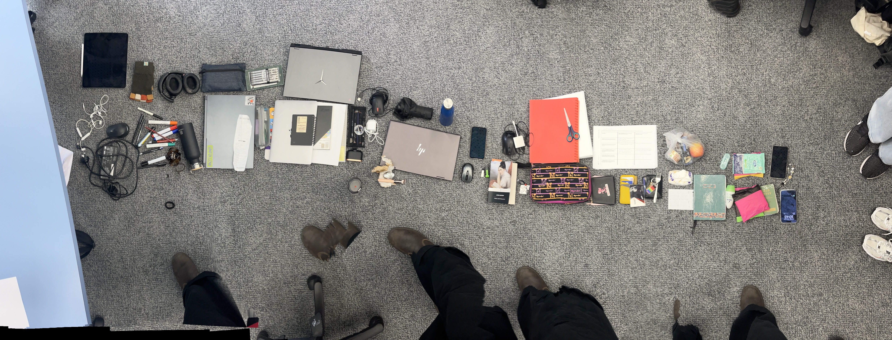
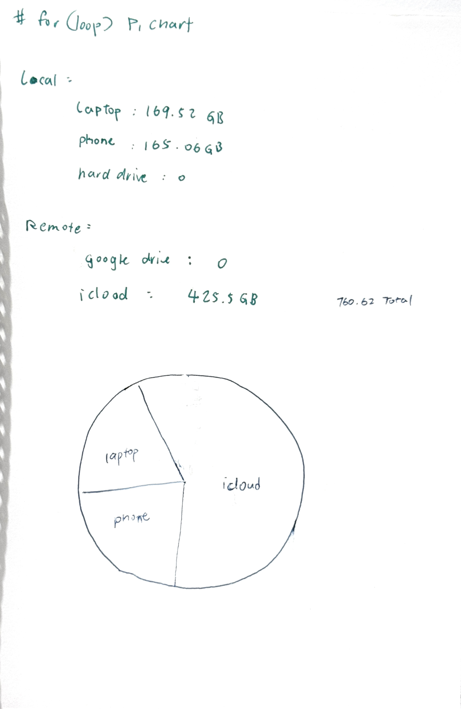
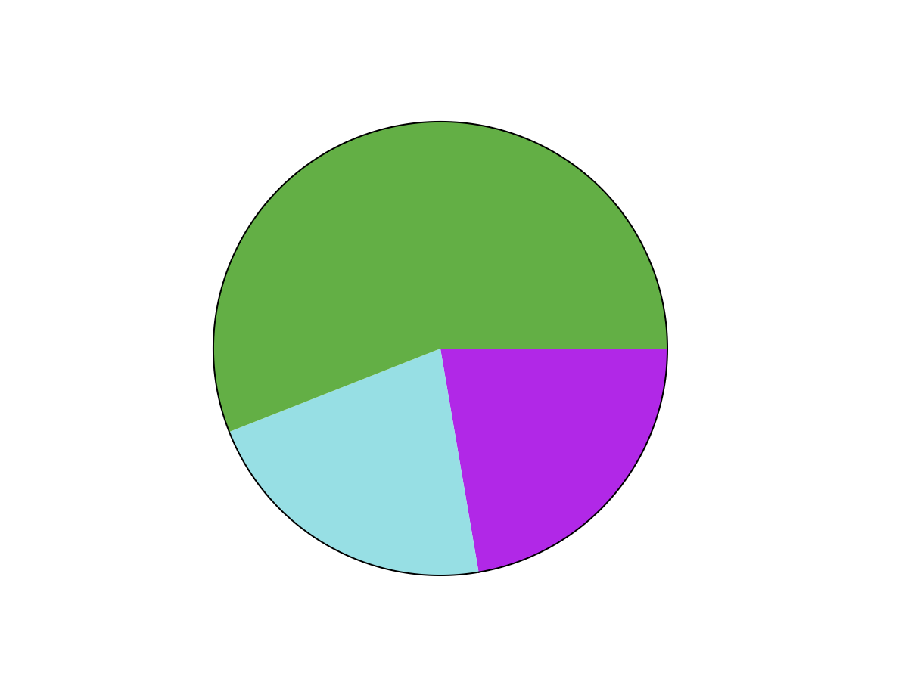
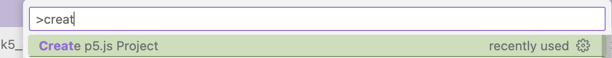

In the week 6 course we discussed how to classify data, Giorgia Lupi and Stefanie Posavec's project “Dear Data” has given me great inspiration. Anything in life can be converted into data. In class we did an activity to categorize all our items. Our group arranged the items in such a way that the items on the far left are the items that we least want others to see (privacy), and the items on the far right are the items that we least want others to see.
http://www.dear-data.com/theproject
The arrangement of other groups is also very interesting. One group is arranged according to the secondary sales value of the item, and another group is arranged according to the degree of danger of the item. For example, a sharp pencil is more dangerous than a book.
I counted my local and remote data. There are 760.62GB in total. If I want to draw a piechart, I use the for loop function.
 From the inspiration of project "Dear Data",I decided to collect on day
install the p5.vscode, then press shif+command+p and type create p5.js project
